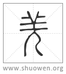

加入收藏
𡸓
古文羌如此。
清代 段玉裁《說文解字注》
- 西戎。
句。按此當有也字。商頌自彼氐羌。箋云。氐羌、夷狄國在西方者也。王制曰。西方曰戎。是則戎與羌一也。
- 羊穜也。
各本作从羊人也。廣韵、韵會、史記索隱作牧羊人也。學者多言牧羊人爲是。其實非也。下文言僰焦僥字乃从人。東夷字乃从大。南方蠻閩字从虫。以其蛇穜也。北方狄字从犬。以其犬穜也。東北方貉字从豸。以其豸穜也。故字皆不从人。假令羌字从人牧羊。則旣人之矣。何待僰僥字始从人哉。且何不入儿部而入羊部哉。是則許謂爲羊穜。與蛇穜、犬穜、豸穜一例。各本作牧羊人。似取風俗通竄改。御覽引風俗通曰。羌本西戎卑賤者也。主牧羊。故羌字从羊人。因以爲號。按應氏風俗通其語有襲用說文者。有竄改說文者。其說貉不从豸穜之說亦見御覽。則說羌不从羊穜正同。今正。
- 从羊儿。
各本作从人从羊。誤也。今正。羊儿者、羊穜而人胻也。
- 羊亦聲。
去羊切。十部。
- 南方蠻閩从虫。
見虫部。南方蠻。東南閩越。此云南方者、槩言之。
- 北方狄从犬。
見犬部。
- 東方貉从豸。
見豸部。豸部云北方。此云東者、謂東北方也。
- 西方羌从羊。此六穜也。
上文祇有四穜。不得言六。或云此當作有謂羌有六穜。明堂位、爾雅所云六戎也。今按亦非文義。當云皆異穜也。以引下文从人从大之字。
- 西南僰人、焦僥从人。
僰人之人賸字。焦各本作僬。誤。僰僥字皆見人部。
- 葢在坤地。頗有順理之性。
坤、順也。在西南。此說僰僥字得从人之意。
- 唯東夷从大。
大部曰。夷、平也。从大弓。東方之人也。
- 大、人也。
天大地大人亦大。故大象人形。僰、焦僥略有人性。故進之。字从人。東夷俗仁。故又進之。字从大。
- 夷俗仁。仁者壽。有君子不死之國。
山海經有君子之國。有不死民。後漢書東夷傳曰。仁而好生。天性柔順。易以道御。有君子不死之國焉。
- 孔子曰。道不行。欲之九夷。乗桴浮於海。
見論語公冶長篇、子䍐篇。
- 有㠯也。
漢地理志曰。東夷天性柔順。異於三方之外。故孔子悼道不行。設桴於海。欲居九夷。有以也夫。自南方蠻閩巳下。揔論四夷字各不同之意。
- 古文羌如此。
不得其說。